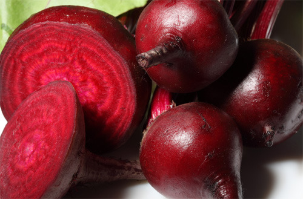
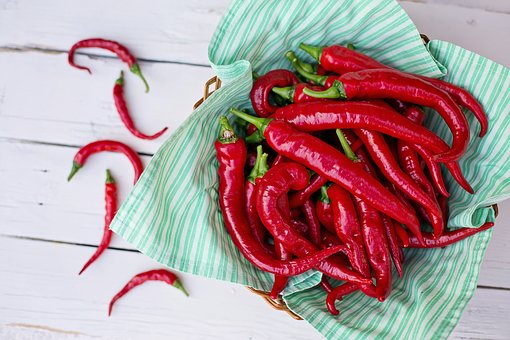

Red Foods
Video(How to make Apple Beet Juice)
Beet(Vegetable)
Effectiveness: In Beet, it will make purely in blood and it can prevent for anemia because of ingredient of iron.
It has a lot of dietary fiber. So, you can diet effectively.
Apple

Effectiveness: In apple, it has fruit acid so it will help to you prevention of aging.
Also, it has ingredient of hemoglavin so it can help the circulation of blood.
It has a lot of dietary fiber. So, it is a very helpful superfood when you eat in the morning.
Chili
Effectiveness: In chili, it has the ingredient of Capsacin so, it can prevent from cancer.
It has ingredient of Vitamin c. So, it will help to you enhancement of immunity and it prevents from harmful viruses in your body.
go back to home